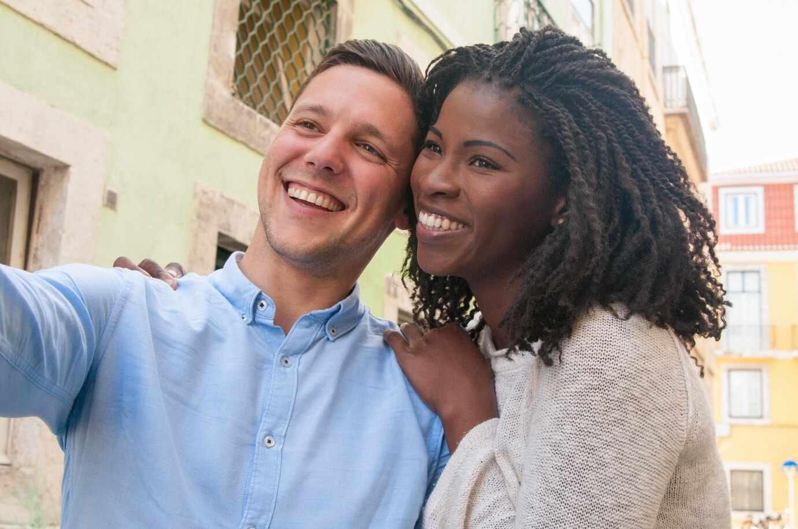

I'm Eniola, a passionate graphic designer hailing from the vibrant city of Lagos, Nigeria. Little did I know that my love story would unfold on the international matchmaking platform, ÌFÉWÁMIRÍ. One fateful day, as I scrolled through profiles, I stumbled upon James, a brilliant software engineer from the beautiful shores of Australia. Despite the miles that separated us, our connection was instantaneous, fueled by shared interests and values.
Our transcontinental courtship involved countless video calls and the crossing of oceans. The commitment we forged during those months culminated in a decision to close the distance. Today, we happily reside in Australia, a testament to the transformative power of love. Thanks to ÌFÉWÁMIRÍ, we continue to build a life brimming with shared adventures and boundless affection.
Eniola 28,
Australia.
I'm Chimamanda, a resilient mother of two from the bustling city of Abuja, Nigeria. The echoes of my past made me hesitant to explore online dating until I discovered the comforting embrace of ÌFÉWÁMIRÍ. On this unique matchmaking website, I found David, a compassionate widower with grown-up children. Our connection deepened through shared experiences, creating a foundation of understanding that transcended our digital interactions.
ÌFÉWÁMIRÍ became the conduit for a second chance at love. Today, our families have seamlessly blended, crafting a home filled with unwavering support and affection. The healing power of love, kindled on this online platform, has created a resilient bond that continues to flourish.
Chimamanda 38,
Abuja, Nigeria.
I'm Adedamola, a passionate artist from the sun-kissed landscapes of Spain. Little did I imagine that my artistic journey would intertwine with the scientific world, thanks to ÌFÉWÁMIRÍ. On this niche matchmaking platform, focused on connecting kindred spirits, I met Maria, a brilliant Cinematographer hailing from the diverse landscapes of Ekiti State but she's based in Canada.
Our messages became a canvas, painted with shared passions for art and science. As our connection deepened, I made the life-altering decision to relocate to Canada. Today, Maria and I are happily married, merging our cultural backgrounds into a harmonious symphony of love and understanding, a melody composed by ÌFÉWÁMIRÍ.
Adedamola 25,
Canada.
I'm Ethan, a firm believer in second chances, and my love story took an unexpected turn on the popular dating app, ÌFÉWÁMIRÍ. Oluwaseun and I initially swiped left on each other, but fate intervened, offering us a second chance through a rematch suggestion. This time, our conversation flourished, revealing shared interests and a profound connection.
Fast forward a year, and we're joyfully celebrating our anniversary. We attribute the success of our love story to ÌFÉWÁMIRÍ, the platform that granted us a second shot at love, proving that sometimes, destiny just needs a little digital nudge.
I'm Ameerah, a shy introvert from the serene landscapes of Ogun State, Nigeria. My journey to love took an unexpected turn when I decided to explore the matchmaking website ÌFÉWÁMIRÍ, an oasis for those seeking deeper connections. There, I discovered Ikechukwu, an equally introverted and bookish soul.
Our connection, grounded in a shared love for literature and quiet introspection, flourished within the virtual realms of ÌFÉWÁMIRÍ. Gradually, we opened up to each other, creating a love story that defied expectations. Today, we are happily married, our union a testament to the platform's ability to bring together two kindred spirits, proving that sometimes, love blossoms in the most unexpected chapters of life.
Ameerah 22,
Plateau, Nigeria.